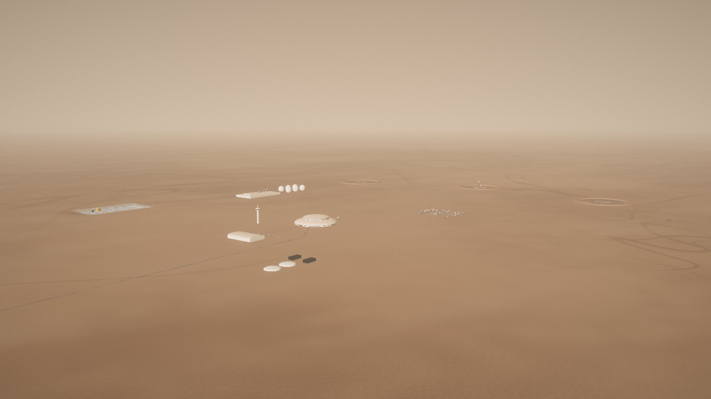

Arcadia Spaceport
Where the ships land and take off, 30 km east of Arcadia on landing site AP-1. Since the Wormhole Gate does the travelling (2 Oct 2026), its ships fly voyages to see space: to orbit, Phobos and Deimos, and further, and the pods take off from here on their scenic flights. It is a harbour and a refinery in one: three pads for ships, a terminal, a station for the pods, and a fuel plant that turns ground ice and the carbon dioxide in the air into rocket fuel. Real fallback: if the Gate stays a dream, this is where the ships from Earth land.

The planEverything a safe distance from the pads
The pads. Three landing pads, 80 m across, of heat-resistant sintered regolith, each inside an apron and a ring berm of earth 6 m high that catches anything the engines throw. They sit 1.6 km east of the terminal on an arc, so ships can land and leave with the others fuelling. Pad 2 holds the ship Jim arrived on.
The terminal is a low white dome 180 m across with a raised drum: arrivals, a health centre for people just in from six months of weightlessness, a lounge and offices. A control tower 77 m tall watches the pads, the pods and the weather.
The pod station is a hangar with a barrel roof on the west side, facing home, with four pod pads outside its doors. The cargo yard takes containers from the ships; in phase 2 a maglev station opens under the terminal.
Power comes from the city's grid, which reaches the port here and goes on to Arcadia along the 30 km cable; batteries and fuel cells stand by for an outage (chapter 05). There are no panels on the ground. The fuel plant, the tank farm and the ice mine lie to the north.
The fuel plantRocket fuel from ice and air
1 · Water. Ice from the mine is melted, filtered and split by electricity into hydrogen and oxygen.
2 · Carbon dioxide. Mars air is 95% CO₂. Pumps draw it in and freeze it out as dry ice on cold plates at night; by day the plates warm up and give it back as pure gas.
3 · The Sabatier reactor. Hydrogen and carbon dioxide meet over a hot nickel catalyst and become methane and water, a reaction chemists have used for a century. The water goes back to step 1.
4 · Cold. Methane is chilled to −162 °C and oxygen to −183 °C, both liquids, and pumped to the six tanks. The ships burn them in a ratio of 3.6 tonnes of oxygen to 1 of methane; the spare oxygen goes to Arcadia's air.
NASA's MOXIE experiment on the Perseverance rover made oxygen from the Mars air 16 times between 2021 and 2023. Sabatier reactors already recycle air on the International Space Station. The plant here is the same chemistry, tens of thousands of times bigger.
| For one ship's trip home | |
|---|---|
| Propellant | 1,200 t |
| Methane, liquid at −162 °C | 260 t |
| Oxygen, liquid at −183 °C | 940 t (+100 t spare) |
| Water ice used | 585 t |
| CO₂ taken from the air | 715 t |
| Electricity | about 8.6 GWh |
| Time, at 2.4 MW | about 5 months |
| The plant | |
|---|---|
| Main hall | 230 × 120 m |
| Reactor columns | 4, 33 m tall |
| Tank farm | 6 spheres, Ø 36 m |
| Tank capacity | about 80 ships' worth, sized for the city |
The ice mineDigging the water
An open pit 320 × 200 m cuts into the ice-rich ground 1 km north of the terminal. A bucket-wheel excavator works the face on three benches; two electric haul trucks carry the ice-rich soil to a conveyor that runs 500 m to the fuel plant, where the ice is melted out and the soil comes back as fill.
The ground here is up to half ice by volume below the first metre, so the pit only needs to go down a few metres a year. When Arcadia's Pentagon was dug, its 1.5 million tonnes of ice filled the tanks for the first years (chapter 03).
AP-9, 58 km further east, has the thickest clean ice seen by radar in the region, and is kept as the next mine when the city grows.
A ship's stayFrom landing to launch